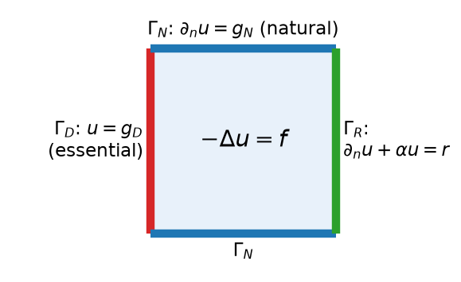
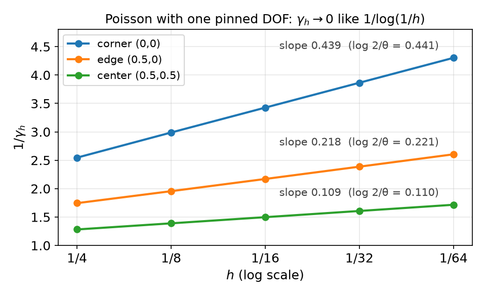
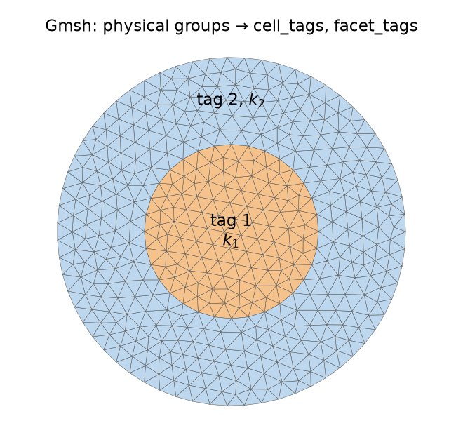

AI-based Materials and Process Simulation I
Week 06 — Boundary Conditions: Mean Estimate · Pure Neumann · Trace Inequality · Partial Dirichlet · Robin · Dirichlet Lifting in DOLFINx · Subdomains, Multi-Material Problems and Gmsh
Process Systems Laboratory
Department of Chemical and Biomolecular Engineering, SeoulTech
Today
| Part | Topic | Time |
|---|---|---|
| Quiz | Week 5 material (closed-AI) | 10 min |
| A | Theory — weak forms with mixed boundary conditions, mean estimate, pure Neumann, trace inequality, partial Dirichlet, Robin | 65 min |
| B | Dirichlet conditions in DOLFINx — locating DOFs, dirichletbc, lifting, the assembly pipeline |
35 min |
| C | Neumann and Robin terms, pure Neumann in PETSc, subdomains, multi-material problems, Gmsh | 45 min |
| D | LLM pitfalls with boundary conditions · assignment | 15 min |
Lab notebook: W06_lab.ipynb · Assignment: W06_HW6.ipynb (due before Week 7)
Week 5 in one slide
| Lax–Milgram | b continuous (M) + coercive (\gamma) on a Hilbert space ⇒ unique u, \|u\|\le\|F\|_{V'}/\gamma — the same on every V_h |
| On V_h | \gamma_h=\lambda_{\min}(K,G) with the Gram matrix G=M+K |
| Helmholtz | M=\gamma=1; Neumann condition is natural |
| Poisson | b(v,v)=|v|^2_{H^1} — a seminorm; \gamma_h\approx0 with natural BCs, 0.952 with u=0 on \partial\Omega |
| MMS | \tilde u with the BC, f by UFL, rates over ≥ 3 meshes |
This week: which boundary conditions remove the constants, and how much of the boundary is enough?
- Pure Neumann (mean estimate), partial Dirichlet (trace inequality), Robin
- Then the implementation: Dirichlet lifting, boundary markers, nullspaces, subdomains and Gmsh meshes
Part A — Boundary Conditions in the Theory
§A1 Three kinds of boundary conditions

\partial\Omega=\Gamma_D\cup\Gamma_N\cup\Gamma_R, \;\mathbf n = outward unit normal.
| Condition | Name | Where it goes |
|---|---|---|
| u=g_D on \Gamma_D | essential (Dirichlet) | in the space: u\in g_D+V_D |
| \partial_nu=g_N on \Gamma_N | natural (Neumann) | in F: \int_{\Gamma_N}g_Nv |
| \partial_nu+\alpha u=r on \Gamma_R | Robin | in b: \alpha\!\int_{\Gamma_R}\!uv; in F: \int_{\Gamma_R}rv |
Robin is the convective (Newton cooling) condition -k\partial_nT=h(T-T_\infty): \alpha=h/k, r=hT_\infty/k. \alpha\to0: Neumann; \alpha\to\infty: Dirichlet u=r/\alpha.
§A2 The weak form with mixed conditions
Multiply -\Delta u=f by v with v=0 on \Gamma_D and integrate by parts: \int_\Omega\nabla u\cdot\nabla v-\int_{\partial\Omega}\partial_nu\,v=\int_\Omega fv .
On \Gamma_D the boundary term vanishes because v=0; on \Gamma_N and \Gamma_R insert the condition:
Weak form
Find u\in H^1(\Omega) with u=g_D on \Gamma_D such that for all v\in V_D=\{v\in H^1(\Omega):v=0\text{ on }\Gamma_D\} \underbrace{\int_\Omega\nabla u\cdot\nabla v+\alpha\int_{\Gamma_R}uv}_{b(u,v)}=\underbrace{\int_\Omega fv+\int_{\Gamma_N}g_Nv+\int_{\Gamma_R}rv}_{F(v)} .
Lifting: write u=u_0+u_g with any u_g\in H^1, u_g=g_D on \Gamma_D. Then u_0\in V_D solves b(u_0,v)=F(v)-b(u_g,v) — a problem on the linear space V_D, where Lax–Milgram applies. Two questions remain: is F bounded (boundary integrals!), and is b coercive on V_D?
§A3 The key inequality
b(v,v)\ge|v|^2_{H^1}, but coercivity needs the full norm \|v\|^2_{H^1}=\|v\|^2_{L^2}+|v|^2_{H^1}. It is enough to have, on the space we work in, \|v\|_{L^2}\le C\,|v|_{H^1}\quad\Longrightarrow\quad \|v\|^2_{H^1}\le(1+C^2)\,|v|^2_{H^1}\le(1+C^2)\,b(v,v),\qquad \gamma=\frac{1}{1+C^2}.
A Poincaré-type inequality. It fails on all of H^1 (v=1), so the space must exclude constants:
| Space | What excludes the constants | Tool |
|---|---|---|
| \bar V=\{v:\int_\Omega v=0\} | zero mean | mean estimate (§A4) |
| V_D=\{v:v=0\text{ on }\Gamma_D\}, |\Gamma_D|>0 | zero on part of the boundary | mean estimate + trace inequality (§A6–A7) |
| H^1 with Robin, \alpha>0 | \alpha\int_{\Gamma_R}v^2 in b | trace inequality (§A9) |
On V_h the best constant is again an eigenvalue: C_h^2=\max\frac{\mathbf v^TM\mathbf v}{\mathbf v^TK\mathbf v} over the space =1/\lambda_{\min}.
§A4 The mean estimate
Lemma — mean estimate
For u\in H^1(\Omega) (in particular any C^0 finite element function), \Omega convex, \bar u=\frac1{|\Omega|}\int_\Omega u: \|u-\bar u\|_{L^2(\Omega)}\le C\,|u|_{H^1(\Omega)},\qquad C\text{ depends only on }\Omega .
Proof sketch. u(x)-u(y)=\int_0^1(x-y)\cdot\nabla u(y+s(x-y))\,ds (FE fundamental theorem of calculus on segments). Average over y: u(x)-\bar u=\frac1{|\Omega|}\int_\Omega\!\int_0^1(x-y)\cdot\nabla u(\cdots)\,ds\,dy. Square, Cauchy–Schwarz, split the s-integral at \frac12 and change variables in each half — the same structure as the averaged Taylor polynomial of Week 4. \square
Best constant on the unit square: C=1/\sqrt{\lambda_2}, where \lambda_2=\pi^2 is the first non-zero Neumann eigenvalue of -\Delta (\cos\pi x).
| P1, C_h=1/\sqrt{\lambda_2(K,M)} | N=4 | N=8 | N=16 | N=32 | limit 1/\pi |
|---|---|---|---|---|---|
| 0.3107 | 0.3163 | 0.3178 | 0.3182 | 0.3183 |
§A5 Pure Neumann
-\Delta u=f in \Omega, \partial_nu=g on all of \partial\Omega: \;b(u,v)=\int\nabla u\cdot\nabla v, \;F(v)=\int fv+\int_{\partial\Omega}gv.
- Compatibility. Take v=1: b(u,1)=0, so a solution exists only if \displaystyle\int_\Omega f+\int_{\partial\Omega}g=0 (sources = outflow).
- Non-uniqueness. If u solves, so does u+c. Fix the constant by working in \bar V=\{v:\int v=0\}.
Theorem — pure Neumann
On \bar V (and on \bar V_h=V_h\cap\bar V) b is coercive with \gamma=1/(1+C^2), C from the mean estimate. With compatible data the solution u\in\bar V satisfies b(u,v)=F(v) for all v\in H^1 (split v=(v-\bar v)+\bar v; the constant part gives 0=0).
Unit square: \gamma=\pi^2/(1+\pi^2)=0.908, independent of h. F contains \int_{\partial\Omega}gv — bounded on H^1 only thanks to the trace inequality.
§A6 Trace inequality
Lemma — FE divergence theorem
For a C^1 vector field \boldsymbol\xi and u in a C^0 FE space: \int_\Omega\nabla\cdot(\boldsymbol\xi u)=\int_{\partial\Omega}\boldsymbol\xi\cdot\mathbf n\,u — the interior facet terms cancel because u is continuous and \mathbf n^+=-\mathbf n^-.
Theorem — trace inequality
On a polygon, \;\|u\|_{L^2(\partial\Omega)}\le C_T\,\|u\|_{H^1(\Omega)}.
Proof. Take \boldsymbol\xi with \boldsymbol\xi\cdot\mathbf n=1 on \partial\Omega, apply the lemma to u^2: \int_{\partial\Omega}u^2=\int_\Omega(\nabla\cdot\boldsymbol\xi)u^2+2u\,\boldsymbol\xi\cdot\nabla u\le c\bigl(\|u\|^2_{L^2}+\|u\|_{L^2}|u|_{H^1}\bigr)\le c'\|u\|^2_{H^1} (2ab\le a^2+b^2). \square
| P1, C_{T,h}^2=\lambda_{\max}(B,G), B_{ij}=\int_{\partial\Omega}\phi_j\phi_i | N=4 | N=8 | N=16 | N=32 |
|---|---|---|---|---|
| unit square | 4.156 | 4.163 | 4.165 | 4.165 |
Bounded. Compare Week 5 (HW5 Q3): the dual norm of a point value grows like \log(1/h) in 2D. Lines carry H^1 functions; points do not.
§A7 Partial Dirichlet
Theorem — partial Dirichlet (Brenner & Scott)
If \Gamma_D\subset\partial\Omega has positive length, then \|v\|_{L^2}\le C|v|_{H^1} on V_D, so Poisson is coercive on V_D and on V_h\cap V_D, uniformly in h.
Proof. \|v\|_{L^2}\le\|v-\bar v\|_{L^2}+\|\bar v\|_{L^2}. First term: mean estimate. Second: since v=0 on \Gamma_D, \|\bar v\|_{L^2}=\frac{|\Omega|^{1/2}}{|\Gamma_D|}\Bigl|\int_{\Gamma_D}(\bar v-v)\Bigr|\le\frac{|\Omega|^{1/2}}{|\Gamma_D|^{1/2}}\|v-\bar v\|_{L^2(\partial\Omega)}\le\frac{|\Omega|^{1/2}C_T}{|\Gamma_D|^{1/2}}\|v-\bar v\|_{H^1}\le C|v|_{H^1}. \ \square
\gamma_h for \Gamma_D=\{x=0,\ 0\le y\le\ell\} (P1):
| \ell | all of \partial\Omega | 1 (one side) | 1/2 | 1/4 | 1/8 | 1/16 |
|---|---|---|---|---|---|---|
| N=16 | 0.9522 | 0.7118 | 0.6283 | 0.5135 | 0.4317 | 0.3767 |
| N=32 | 0.9519 | 0.7116 | 0.6240 | 0.5069 | 0.4227 | 0.3643 |
Smaller \Gamma_D → smaller \gamma (the constant has |\Gamma_D|^{-1/2}), but for fixed \ell>0 it settles as h\to0.
§A8 A point is not a boundary condition
Shrink \Gamma_D to one DOF (a vertex p with v(p)=0):

1/\gamma_h grows by a constant per halving of h, \approx\log2/\theta (\theta = interior angle at p: \pi/2, \pi, 2\pi). So \gamma_h\sim\theta/\log(1/h)\to0: no h-uniform stability.
- 2D: v can be pulled to 0 at a point at an energy cost \to0. The theorem needs |\Gamma_D|>0.
- 1D: H^1\subset C^0, one point is enough.
- “Pin one DOF” for pure Neumann works only with compatible data (§C4).
§A9 Robin conditions
b(u,v)=\int_\Omega\nabla u\cdot\nabla v+\alpha\int_{\partial\Omega}uv, \alpha>0, on all of H^1:
- Continuous: |b(u,v)|\le|u|_{H^1}|v|_{H^1}+\alpha\|u\|_{L^2(\partial\Omega)}\|v\|_{L^2(\partial\Omega)}\le(1+\alpha C_T^2)\|u\|_{H^1}\|v\|_{H^1} — trace inequality.
- Coercive: b(v,v)=|v|^2_{H^1}+\alpha\|v\|^2_{L^2(\partial\Omega)} controls \|v\|^2_{L^2} by a Friedrichs-type inequality — HW6 Q1.
| P1, N=32 | \alpha=0.01 | 0.1 | 1 | 10 | 100 | 10^4 |
|---|---|---|---|---|---|---|
| \gamma_h=\lambda_{\min}(K+\alpha B,\,G) | 0.0399 | 0.3893 | 0.9405 | 0.9510 | 0.9518 | 0.9519 |
- \alpha\to0: \gamma\approx\alpha|\partial\Omega|/|\Omega|=4\alpha (attained by constants) — Neumann.
- \alpha\to\infty: \gamma\to2\pi^2/(1+2\pi^2)=0.9518 — the Dirichlet value of §A7.
§A10 Summary and exercises
| Problem | Space | Coercivity from | F bounded by |
|---|---|---|---|
| Helmholtz, Neumann | H^1 | b=(\cdot,\cdot)_{H^1} | Cauchy–Schwarz + trace (for g) |
| Poisson, pure Neumann | \int v=0 | mean estimate; data must satisfy \int f+\int g=0 | trace |
| Poisson, partial Dirichlet | v=0 on \Gamma_D, |\Gamma_D|>0 | mean estimate + trace | trace |
| Poisson, Robin | H^1 | trace + Friedrichs-type | trace |
Exercise A.1 — Compatibility
For -\Delta u+cu=f, \partial_nu=g with a constant c>0, is a compatibility condition needed? Why not?
Exercise A.2 — One dimension
On (0,1) with v(0)=0 show |v(x)|\le\sqrt x\,\|v'\|_{L^2} and hence \|v\|_{L^2}\le\tfrac1{\sqrt2}|v|_{H^1}. Why does this argument fail in 2D for a single point?
Part B — Dirichlet Conditions in DOLFINx
§B1 Essential conditions in the linear system
Split the DOFs into free (I) and Dirichlet (D) ones, \mathbf u_D=\mathbf g: \begin{bmatrix}A_{II}&A_{ID}\\A_{DI}&A_{DD}\end{bmatrix}\begin{bmatrix}\mathbf u_I\\\mathbf u_D\end{bmatrix}=\begin{bmatrix}\mathbf b_I\\\mathbf b_D\end{bmatrix} \quad\longrightarrow\quad A_{II}\,\mathbf u_I=\mathbf b_I-A_{ID}\,\mathbf g . The rows of D are test functions that are not in V_D — they are dropped; the columns of D multiply known values and move to the right.
DOLFINx keeps the full size and solves the symmetric system \begin{bmatrix}A_{II}&0\\0&I\end{bmatrix}\begin{bmatrix}\mathbf u_I\\\mathbf u_D\end{bmatrix}=\begin{bmatrix}\mathbf b_I-A_{ID}\mathbf g\\\mathbf g\end{bmatrix}
| Step | Function |
|---|---|
| zero rows and columns of D, put 1 on the diagonal | assemble_matrix(a, bcs=[bc]) |
| \mathbf b_I\leftarrow\mathbf b_I-A_{ID}\mathbf g (“lifting”) | apply_lifting(b, [a], bcs=[[bc]]) |
| \mathbf b_D\leftarrow\mathbf g | set_bc(b, [bc]) |
§B2 Finding the boundary DOFs
# by DOF coordinates (Lagrange elements: DOFs are point values)
dofs = fem.locate_dofs_geometrical(V, lambda x: np.isclose(x[0], 0.0))
# by mesh entities: all DOFs on the given facets (vertices, edge midpoints, ...)
fdim = msh.topology.dim - 1
msh.topology.create_connectivity(fdim, msh.topology.dim)
facets = mesh.locate_entities_boundary(msh, fdim, lambda x: np.isclose(x[0], 0.0))
dofs = fem.locate_dofs_topological(V, fdim, facets) # or ft.find(tag) from facet tagsLeft side of the 8\times8 unit square:
| marker | P1 | P2 |
|---|---|---|
np.isclose(x[0], 0) |
9 | 17 |
| topological, left facets | 9 | 17 |
x[0] == 0.0 |
0 | 0 |
x[0] == 1.0 (right side) |
0 | 8 |
The DOF coordinates on x=0 are \pm2.7\times10^{-18}, not 0 (Week 4: x**a gave nan for the same reason). Exact float comparison finds nothing — no error, just a missing boundary condition.
§B3 fem.dirichletbc in 0.11
bc = fem.dirichletbc(0.0, dofs, V) # constant value: pass V
bc = fem.dirichletbc(fem.Constant(msh, 1.0), dofs, V) # Constant: pass V
g = fem.Function(V) # space-dependent value
g.interpolate(lambda x: np.sin(np.pi * x[1])) # NumPy callable, or
g.interpolate(fem.Expression(u_ex, V.element.interpolation_points)) # a UFL expression (MMS)
bc = fem.dirichletbc(g, dofs) # Function: V is taken from g| Call | 0.11 |
|---|---|
dirichletbc(g, dofs) with g a Function |
✅ |
dirichletbc(g, dofs, V) with g a Function |
TypeError: __init__(): incompatible function arguments |
| several boundary parts | one bc per part, bcs=[bc_left, bc_right] |
For a sub-space (vector or mixed problems, Week 11) the DOFs come from locate_dofs_topological((V.sub(0), V0), ...) — geometrical location needs DOF coordinates, the topological one always works.
§B4 The assembly pipeline
a, L = fem.form(a_ufl), fem.form(L_ufl)
A = assemble_matrix(a, bcs=[bc]); A.assemble() # rows and columns of D zeroed, diagonal 1
b = assemble_vector(L)
apply_lifting(b, [a], bcs=[[bc]]) # b_I -= A_ID g (each rank, incl. ghosts)
b.ghostUpdate(addv=PETSc.InsertMode.ADD, mode=PETSc.ScatterMode.REVERSE) # ghosts → owners
set_bc(b, [bc]) # b_D = g (owned entries only)
ksp.solve(b, uh.x.petsc_vec); uh.x.scatter_forward()LinearProblem(a_ufl, L_ufl, bcs=[bc], petsc_options_prefix=..., ...) performs exactly these steps.
The order matters. set_bc writes \mathbf g into owned entries. A later ghostUpdate(ADD) adds the other rank’s contributions on top of it — the Dirichlet values are corrupted, but only in DOFs that are also ghosts on another rank.
§B5 Pipeline mistakes, measured
Mixed problem of §C2 (Dirichlet + Neumann + Robin), P1, -np 2, L^2 error:
| N=8 | 16 | 32 | 64 | symptom | |
|---|---|---|---|---|---|
| correct | 1.9e-2 | 4.9e-3 | 1.2e-3 | 3.1e-4 | rate 2 |
no apply_lifting |
0.55 | 0.57 | 0.59 | 0.60 | stagnates |
assemble_matrix(a) without bcs |
15 | 26 | 47 | 90 | grows |
set_bc before ghostUpdate |
1.9e-2 | 1.6e-2 | 1.2e-3 | 3.1e-4 | one mesh only (here N=16; on Colab N=64), only with -np 2 |
- Without lifting the free rows still “see” \mathbf u_D=0: the solution is that of g_D=0 in the interior, glued to g_D on \Gamma_D.
- The ordering bug is invisible with
-np 1, and which mesh it hits depends on the partition — only a rate table and a parallel run catch it.
Part C — Neumann, Robin, Subdomains
§C1 Boundary markers and ds(i)
LEFT, RIGHT, BOTTOM, TOP = 1, 2, 3, 4
facets, values = [], []
for tag, marker in ((LEFT, lambda x: np.isclose(x[0], 0)), (RIGHT, lambda x: np.isclose(x[0], 1)),
(BOTTOM, lambda x: np.isclose(x[1], 0)), (TOP, lambda x: np.isclose(x[1], 1))):
f = mesh.locate_entities_boundary(msh, fdim, marker)
facets.append(f); values.append(np.full(len(f), tag, dtype=np.int32))
facets, values = np.hstack(facets), np.hstack(values)
order = np.argsort(facets) # meshtags expects sorted indices
ft = mesh.meshtags(msh, fdim, facets[order], values[order])
ds = ufl.Measure("ds", domain=msh, subdomain_data=ft)
L = f * v * ufl.dx + g_N * v * ds(TOP) + g_N * v * ds(BOTTOM) + r * v * ds(RIGHT)
bc = fem.dirichletbc(g_D, fem.locate_dofs_topological(V, fdim, ft.find(LEFT)))Check the tags: \int 1\,ds(i) must be the length of side i. Without subdomain_data the same code runs, and \int1\,ds(1)=0 — every ds(i) term silently disappears (§D1).
§C2 MMS with all three conditions
\tilde u=1+\sin(\pi x)e^{y}+xy^2 — no special boundary behavior needed: all boundary data are computed from \tilde u.
n = ufl.FacetNormal(msh)
f = -ufl.div(ufl.grad(u_ex))
g_N = ufl.dot(ufl.grad(u_ex), n) # Neumann data on top and bottom (normal from UFL)
r = ufl.dot(ufl.grad(u_ex), n) + alpha * u_ex # Robin data on the right, alpha = 10
g_D = fem.Function(V); g_D.interpolate(fem.Expression(u_ex, V.element.interpolation_points)) # left
a = inner(grad(u), grad(v)) * dx + alpha * u * v * ds(RIGHT)-np 2, LU:
| \|e\|_{L^2}, N=8\to64 | rates | |e|_{H^1} rates | |
|---|---|---|---|
| P1 | 1.94e-2 → 3.08e-4 | 1.98, 2.00, 2.00 | 0.99, 1.00, 1.00 |
| P2 | 4.68e-4 → 9.36e-7 | 2.98, 2.99, 2.99 | 1.98, 1.99, 2.00 |
Week 5 had to pick \tilde u with \partial_n\tilde u=0 because g=0 was hard-wired. With boundary terms in F, any smooth \tilde u works.
§C3 Pure Neumann in PETSc
K is singular, K\mathbf 1=\mathbf 0. Tell the solver:
ns = PETSc.NullSpace().create(constant=True, comm=msh.comm)
A.setNullSpace(ns) # Krylov methods work orthogonal to the constant vector
ns.remove(b) # project b: sum_i b_i = 0
ksp.setType("cg"); ksp.getPC().setType("hypre")
ksp.solve(b, uh.x.petsc_vec); uh.x.scatter_forward()
mean = msh.comm.allreduce(fem.assemble_scalar(fem.form(uh * ufl.dx)), op=MPI.SUM)
uh.x.array[:] -= mean # the nullspace fixes sum_i u_i, not the integral of u_hCompatible data (\tilde u=\cos\pi x\cos\pi y+x^2y, f, g by UFL), -np 2: CG + hypre needs 7–8 iterations for every N; rates P1 1.95, 1.99, 2.00 and P2 2.98, 2.99, 3.00 (L^2). Without the last two lines, \int u_h is of order 10^{-3} instead of 0: harmless for gradients, wrong for a comparison with \tilde u.
§C4 Pure Neumann with incompatible data
f\to f+1, so \int f+\int g=1. P1, -np 2; error of u_h-\bar u_h against \tilde u-\bar{\tilde u}:
| Strategy | KSP reason | \|e\|_{L^2}, N=8\to64 | \max|u_h| |
|---|---|---|---|
nullspace + remove(b), CG |
2 | 2.4e-2 → 9.4e-4, rates 1.79, 1.59, 1.31 | 1.8 |
nullspace, b not projected, CG |
−8, −8, −8, −4 | 4.8e-2 → 5.7\times10^4 | up to 2\times10^{11} |
| pin one DOF (corner), LU | 4 | 0.26 → 0.25, stagnates | 4.2 → 5.5, grows |
| plain LU | 4 | erratic | 10^{12}–10^{14} |
remove(b)subtracts the same number from every entry of \mathbf b — that is not the load vector of a constant (boundary DOFs carry less weight), so it solves a nearby problem.- Pinning turns the defect into a point source at the pinned corner: \max|u_h| grows by 0.44 per halving of h =\log2/(\pi/2), the \log(1/r) of §A8.
- With compatible data all four strategies give the same errors. Print \int f+\int g before solving.
§C5 Subdomains and multi-material problems
-\nabla\cdot(k\nabla u)=f with k=k_1 in \Omega_1, k=k_2 in \Omega_2. Weak form unchanged: \int_\Omega k\nabla u\cdot\nabla v.
Interface conditions on \Gamma=\partial\Omega_1\cap\partial\Omega_2:
- [u]=0 — built into V_h\subset H^1 (continuous elements)
- [k\,\partial_nu]=0 (flux continuity) — natural: comes out of the integration by parts, nothing to impose
u has a kink on \Gamma: it is smooth on each side, but not in H^2(\Omega).
Q = fem.functionspace(msh, ("DG", 0)); k = fem.Function(Q) # one value per cell
k.x.array[ct.find(1)] = 10.0; k.x.array[ct.find(2)] = 1.0 # from cell tags (Gmsh)
# or: cells = mesh.locate_entities(msh, tdim, lambda x: x[0] <= 0.5 + 1e-12)
a = k * ufl.inner(ufl.grad(u), ufl.grad(v)) * ufl.dx
dx = ufl.Measure("dx", domain=msh, subdomain_data=ct) # alternative: one term per material
a = 10.0 * ufl.inner(ufl.grad(u), ufl.grad(v)) * dx(1) + 1.0 * ufl.inner(ufl.grad(u), ufl.grad(v)) * dx(2)§C6 The mesh must follow the interface
Layered square, k=1 for x<s, k=10 for x>s; \tilde u=\cos(\pi y)\cdot\{\sin(\pi x)/k_i+c_i\} has continuous u and k\,\partial_xu. -np 2, LU:
| interface | element | L^2 rates (N=8\to64) | H^1 rates |
|---|---|---|---|
| s=1/2 — on mesh lines | P1 | 1.98, 1.99, 2.00 | 1.00, 1.00, 1.00 |
| P2 | 3.01, 3.00, 3.00 | 1.99, 2.00, 2.00 | |
| s=1/3 — cuts through cells | P1 | 0.57, 1.84, 0.26 | 1.07, 0.47, 0.92 |
| P2 | 1.02, 0.94, 1.03 | 1.68, −0.65, 1.71 |
- On a fitted mesh, u is smooth on every cell: the interpolation estimate of Week 4 applies cell by cell → full rates.
- On a cut mesh, cells contain the kink: rate about 1 in L^2, erratic, and P2 is no better than P1. Fix the mesh, not the element.
§C7 Gmsh: geometry → tagged mesh
import gmsh
from dolfinx.io import gmsh as gmshio
gmsh.initialize()
if comm.rank == 0: # build the model on one rank
outer = gmsh.model.occ.addDisk(0, 0, 0, 1, 1)
inner = gmsh.model.occ.addDisk(0, 0, 0, 0.5, 0.5)
gmsh.model.occ.fragment([(2, outer)], [(2, inner)]) # conforming interface
gmsh.model.occ.synchronize()
gmsh.model.addPhysicalGroup(2, [s_in], 1); gmsh.model.addPhysicalGroup(2, [s_out], 2) # → cell tags
gmsh.model.addPhysicalGroup(1, outer_curves, 10) # → facet tag
gmsh.option.setNumber("Mesh.CharacteristicLengthMax", 0.1)
gmsh.model.mesh.generate(2)
md = gmshio.model_to_mesh(gmsh.model, comm, 0, gdim=2) # every rank
gmsh.finalize()
msh, ct, ft = md.mesh, md.cell_tags, md.facet_tags
h=0.1: 817 cells (212 inclusion, 605 matrix), 63 outer facets (Gmsh 4.15; counts depend on the version).
Only entities in a physical group become part of the mesh; the group tags become cell_tags / facet_tags.
§C8 Gmsh disk: geometry limits the rate
k_1=10 for r<\tfrac12, k_2=1; u=0 on r=1; exact u=\cos(\pi r/2)/k_i+c_i. -np 2, L^2 error, Gmsh size h=0.2\to0.025:
| mesh | element | L^2 rates |
|---|---|---|
interface meshed (fragment) |
P1 | 2.04, 1.99, 2.00 |
| P2, straight-sided triangles | 2.01, 2.02, 2.01 | |
P2, curved triangles (gmsh.model.mesh.setOrder(2)) |
3.28, 2.97, 3.02 | |
| interface not meshed (k from cell midpoints) | P1 | 1.46, 0.74, 1.28 |
- Straight-sided cells replace the circles by polygons: an O(h^2) geometry error that P2 cannot beat. Curved (isoparametric) cells restore h^3.
- A curved interface that the mesh ignores costs as much as the misaligned layer of §C6.
§C9 Math → DOLFINx
| Math | DOLFINx 0.11 |
|---|---|
| \Gamma_D,\Gamma_N,\Gamma_R | mesh.meshtags(msh, fdim, facets_sorted, tags), or md.facet_tags from Gmsh |
| u=g_D on \Gamma_D | fem.dirichletbc(g, fem.locate_dofs_topological(V, fdim, ft.find(i))) |
| \int_{\Gamma_N}g_Nv, \alpha\int_{\Gamma_R}uv | g * v * ds(i), alpha * u * v * ds(j) with ds = Measure("ds", subdomain_data=ft) |
| \partial_n\tilde u | ufl.dot(ufl.grad(u_ex), ufl.FacetNormal(msh)) |
| lifting \mathbf b_I-A_{ID}\mathbf g | assemble_matrix(a, bcs), apply_lifting, ghostUpdate, set_bc — in this order |
| \int v=0 (pure Neumann) | PETSc.NullSpace().create(constant=True), A.setNullSpace, ns.remove(b), subtract the mean |
| k per material | DG0 Function from cell_tags, or dx(i) with subdomain_data=ct |
| geometry | Gmsh physical groups → dolfinx.io.gmsh.model_to_mesh |
Part D — LLMs and Boundary Conditions · Assignment
§D1 Where LLM-generated BC code goes wrong
| Kind | What it looks like | Detection |
|---|---|---|
| Stale API | dirichletbc(g_func, dofs, V); LinearProblem without prefix; from dolfinx.io import gmshio; msh, ct, ft = model_to_mesh(...) |
TypeError, ImportError, ValueError at once |
| Silent location bugs | x[0] == 0 — finds 0 DOFs on P1 and P2; the problem stays solvable |
count DOFs, \int1\,ds(i) |
| Silent measure bugs | ds(i) without subdomain_data (integral = 0); dx instead of ds |
\int1\,ds(i); rates |
| Wrong data | \partial_nu written as \partial_yu on the bottom side (\mathbf n=(0,-1)); Robin term only in L | error stagnates |
| Pipeline | no apply_lifting; set_bc before ghostUpdate; assemble_matrix without bcs |
rates; -np 1 vs -np 2 |
| Pure Neumann | LU on the singular matrix; no compatibility check; mean not removed | reason, \max|u_h|, \int f+\int g |
§D2 Verify each boundary separately
Checklist for a BC-heavy solver
- Print the number of DOFs on each Dirichlet part and \int 1\,ds(i) for each tag.
- MMS with every condition active, all data computed from \tilde u by UFL (normals from
FacetNormal). - Rates over ≥ 3 meshes, P1 and P2.
- Same numbers with
-np 1and-np 2. - Pure Neumann: \int f+\int g, KSP reason, \max|u_h|, mean removed.
- Multi-material: look at the mesh — does it follow the interfaces?
A boundary condition that is missing usually leaves a solvable problem: wrong, but no error message. A rate table is the only alarm.
Assignment — HW6, due before the Week 7 lecture
HW6 — Multi-material and Robin conditions (100)
- Q1 proofs: pure Neumann with boundary data, Robin coercivity, Dirichlet lifting in matrix form (25)
- Q2 composite wall: two materials, Dirichlet + insulated + convective (Robin) sides, heat generation; exactness, rates, fitted vs cut interface (35)
- Q3 coercivity constants: Robin, and one pinned DOF at a corner, an edge and an interior point (20)
- Q4 LLM-generated mixed-BC solver with planted bugs: find, fix, explain (20)
Submit the executed .ipynb (restart & run all) with the AI-usage log.
Reminder: an error in a %%fenicsx cell does not stop Run all. Read every output before you submit.
Summary
| Concept | Key idea | DOLFINx |
|---|---|---|
| Essential / natural | Dirichlet in the space; Neumann, Robin in the forms | dirichletbc; ds(i) |
| Poincaré-type inequality | \|v\|_{L^2}\le C|v|_{H^1} on the space ⇒ \gamma=1/(1+C^2) | \gamma_h=\lambda_{\min} |
| Pure Neumann | mean estimate; \int f+\int g=0; u up to a constant | NullSpace, remove(b), subtract mean |
| Trace inequality | \|u\|_{L^2(\partial\Omega)}\le C\|u\|_{H^1}; lines yes, points no | ds data bounded |
| Partial Dirichlet | needs |\Gamma_D|>0; one pinned DOF: \gamma_h\sim1/\log(1/h) | locate_dofs_topological |
| Lifting | A_{II}\mathbf u_I=\mathbf b_I-A_{ID}\mathbf g | apply_lifting → ghostUpdate → set_bc |
| Multi-material | flux continuity is natural; the mesh must follow the interface | DG0 k, cell_tags, Gmsh |
Next week — Convergence theory
Sobolev spaces, Céa’s lemma, elliptic regularity, Aubin–Nitsche: why the rates are k and k+1 — and when they are not.